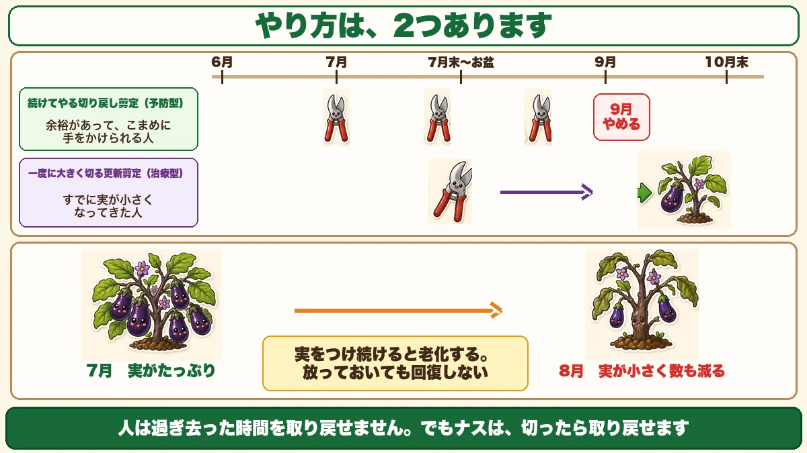
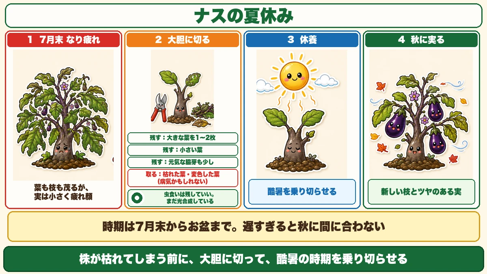
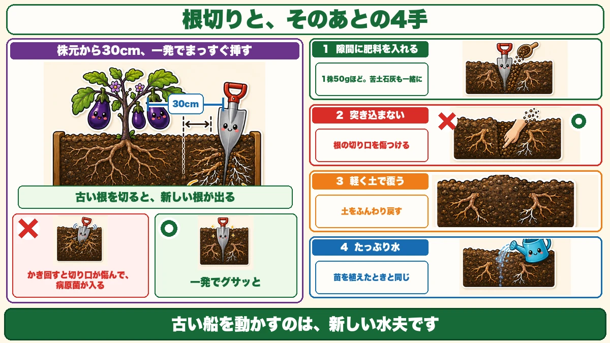
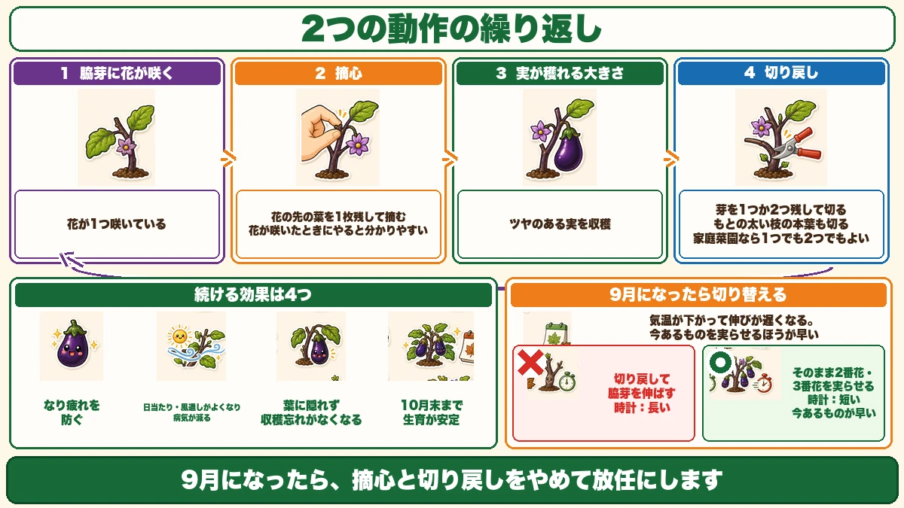

An aubergine can be brought back by cutting it 🍆 Don't pull it up in August

🍆 "The fruit suddenly got small in August."
🍆 "I assumed it was finished and pulled it out."
🍆 "How do you get autumn aubergines?"
Hello, I'm Eiko. Eight years of growing vegetables organically and without pesticides, and a teaching licence in science.
From midsummer, aubergines change. Small fruit, pale colour, fewer of them. Plenty of people conclude it's over and pull the plant. Wait.
The headline:
An aubergine can be brought back by cutting it.
Not many vegetables can do that.
Cropping exhaustion
It's heat fatigue
That midsummer state has a name: cropping exhaustion. The plant is worn out from producing fruit continuously — heat fatigue, in human terms.
And the important part: it does not recover on its own.
"It'll pick up when it cools down" — it won't. Without intervention, that's the end of it.
Fruiting ages a plant
There's a reason. Any vegetable ages once it flowers and fruits. Pinch out, remove side shoots, feed religiously — you cannot avoid the wear.
A plant's purpose is to leave seed, so fruiting is a major undertaking for it. Repeat that dozens of times and it's tired.
But aubergines are different
People can't get back time that has passed. An aubergine can be cut back and regained. A grower I read put it that way, and I think it's well said.
Cut it, rest it, fruit it again. An aubergine will do that.
Two methods

What this diagram says （図解の文字）
- There are two methods
- Cutting back continuously (preventive) — "for people with time to do it little and often"
- One hard renewal cut (curative) — "for when the fruit is already getting small"
- Timeline: June → July → late July to mid-August → September → end of October
- Continuous cutting back — from midsummer, trimming a little at a time. Keeps the load light before exhaustion sets in. Preventive.
- One hard renewal cut — a bold cut back in the hottest part of summer. Rests an already tired plant so it recovers. Curative.
Neither is compulsory. Plenty of time and inclination → the first. Fruit already shrinking, want to deal with it in one go → the second.
I'd start with the renewal cut, because the effect is unmistakable.
The renewal cut — an aubergine's summer holiday

What this diagram says （図解の文字）
- An aubergine's summer holiday
- 1 "Exhausted: leaves and stems everywhere, fruit small, plant looking tired"
- 2 "Cut boldly" — keep: "one or two large leaves", "small leaves", "a few healthy side shoots"
- remove: "dead and discoloured leaves (they may be diseased)"
The purpose is rest
Cut it back boldly before the plant dies, and let it ride out the worst heat — then recover its energy and fruit again once the temperature settles.
"An aubergine's summer holiday" describes it well.
Timing: the hottest stretch, and not later
Do it in the last part of high summer, for two reasons:
- That's when heat exhausts the plant most
- It needs time to recover after being cut
Too late and it won't make the autumn crop. Past the peak of summer, I'd leave it.
How far to cut
Boldly. But not everything — you keep an insurance policy.
Keep: one or two large leaves, the small leaves, and a few healthy side shoots.
Remove: dead and discoloured leaves — those may be diseased.
Insect-holed leaves stay
Growing without sprays, leaves have holes in them. Leave those. A holed leaf is still photosynthesising — don't cut on appearance. What you remove is dead or discoloured; holed leaves are still working.
Root pruning — do it at the same time

What this diagram says （図解の文字）
- Root pruning, and the four steps after it
- "30 cm from the stem, one straight thrust"
- "Cut the old roots and new ones come"
- ✗ "stirring it about damages the cuts and pathogens get in" ／ ○ "one clean thrust"
- 1 "put fertiliser into the slot" — "about 50 g per plant, with dolomite lime"
Not essential, but it makes a difference.
One thrust
About 30 cm (12 in) from the stem, drive a spade in deep and hard, and cut through the roots.
The key point: don't lever it about. One decisive thrust.
Because stirring causes disease
Working it back and forth bruises the cut surfaces, and pathogens get in. A wound is a way in — and a cut root is a wound like any other.
One clean cut. That's the technique.
Why cutting roots revives a plant
It sounds backwards. It isn't.
Cut the old roots and new ones grow.
Remember that a root absorbs only at its tip, and an old root has lost much of that capacity. Cut it and the plant sets about growing new roots — more new tips means more mouths.
New sailors for an old ship.
Then feed, without fail
Put fertiliser into the slot the spade made:
- About 50 g per plant of bokashi or a compound fertiliser
- Plus dolomite lime — magnesium and calcium run short at this time of year
Don't push it in
Scatter it, don't work it in. Pushing it in turns the soil over and damages the root cuts you just made. Cover it lightly with soil and that's enough.
Then water heavily
Water generously along the line the spade went in.
It's the same as planting: pour water into the hole first. You're pre-wetting the ground the new roots will grow into — exactly the same idea.
With mulch film, water first and then put the film back.
Honestly, it's a frightening job
The downsides
It would be unfair to list only the benefits.
- Harvest stops for a while. You're cutting away the good growth, and the next picking is some way off
- Cut too much and it dies. That's the real risk — strip it completely and it can't recover
Which is why you keep one or two leaves and a few side shoots as insurance. Don't skip that.
Continuous cutting back

What this diagram says （図解の文字）
- Two actions, repeated
- 1 "A flower opens on a side shoot"
- 2 "Pinch" — "leave one leaf beyond the flower and pinch out the tip" — "doing it when the flower opens makes it easy to see"
- 3 "The fruit reaches picking size"
- 4 "Cut back" — "leaving one or two buds"
This one runs from midsummer onward.
Step 1 — pinch, when a flower opens. A flower opens on a side shoot; leave one leaf beyond the flower and pinch out the tip. Doing it at flowering is easiest — once the fruit has set, it's harder to see where to cut.
Step 2 — cut back, when you pick. That flower becomes a fruit and reaches picking size. As you pick, cut back leaving one or two buds on the side shoot, and also remove the true leaf on the original thick stem.
Repeat those two, continuously.
One bud or two — either is fine
Commercial growers often keep one. In a home garden, one or two is fine — you're not maximising yield, so choose whichever you find easier to manage.
Four benefits
- It prevents cropping exhaustion
- Fewer stems means better light and air, so less disease
- Fruit isn't hidden by leaves, so you stop missing them
- Less strain from fruiting, so growth stays steady into late autumn
The third sounds minor and isn't. No more finding a marrow-sized aubergine hidden behind a leaf.
Keep removing the lower leaves
Alongside the pruning, cut away the lower leaves once you've picked from that part. They've finished their job, and removing them also stops soil splash.
Stop in September
An unexpected switch
From autumn, stop pinching and cutting back, and let it run. I had assumed you kept going.
The reason is temperature
As it cools, growth slows. So:
- Cut back and grow new side shoots → they take too long
- Leave it and let the second and third flowers fruit → much quicker
In autumn, ripening what's there beats growing something new.
But thin it if it's crowded
One exception: if the stems are congested, cut out the weak ones and any carrying no fruit. Airflow matters in every season.
To sum up
- ✅ Small fruit in late summer is cropping exhaustion — heat fatigue
- ✅ It does not recover on its own
- ✅ Fruiting ages any plant — but an aubergine can be cut back and regained
- ✅ Two methods: continuous (preventive) and one hard renewal cut (curative)
- ✅ Do the renewal cut in the hottest stretch, not later
- ✅ Keep 1–2 large leaves, the small ones, a few side shoots; remove dead and discoloured
- ✅ Insect-holed leaves stay — they still photosynthesise
- ✅ Root-prune 30 cm out with one clean thrust. Don't stir it about
- ✅ Cut old roots, get new tips. Then feed 50 g, lightly covered, and water heavily
- ✅ Cut too much and it dies. Try one plant and compare in two weeks
- ✅ Continuous: pinch at flowering, cut back at picking, leaving 1–2 buds
- ✅ Stop in autumn and let it run — ripening beats regrowing
You don't have to do all of it. Cut one plant back hard. Before you pull it out, it's worth one try 🍆
Thank you for reading!